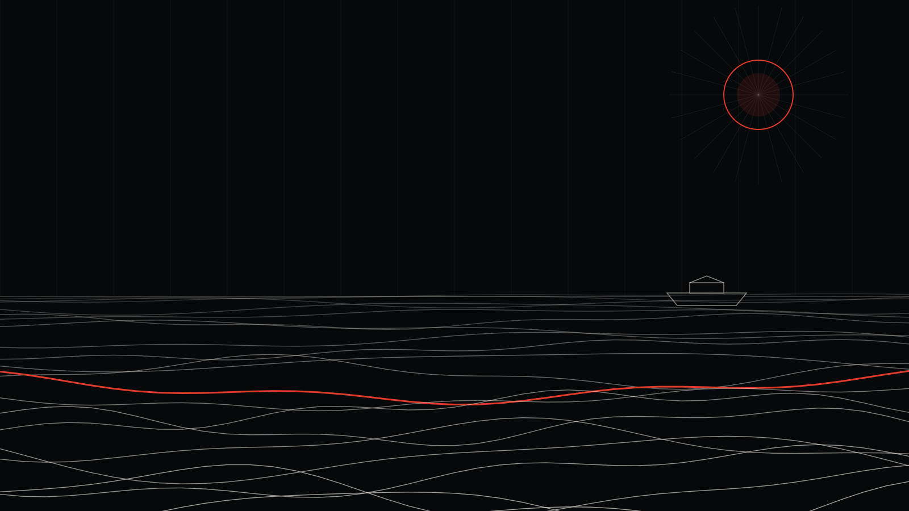

İdil Instagram Reklamı: Küçük İlçede Büyük Görünmenin Yolu

İdil gibi bir ilçede Instagram reklamı vermek gereksiz bir masraf mı, yoksa rakiplerinin önüne geçmenin en ucuz yolu mu?
Çoğu zaman ikincisi. Büyük şehirlerde bir işletme yüzlerce rakiple aynı ekran için yarışırken, İdil'de reklam veren işletme sayısı çok az. Bu da şu demek: Doğru kurulmuş küçük bir bütçe bile ilçedeki insanların büyük bölümüne, düzenli olarak ulaşabilir.
İdil'in reklam haritası
İdil, Mardin'in Midyat'ı ile Cizre arasındaki yol üzerinde, tarım ve hayvancılığın güçlü olduğu bir ilçe. Merkezinin yanında Karalar ve Sırtköy beldeleri de var. Bu yapı reklam açısından üç farklı müşteri grubu oluşturuyor:
- İlçede yaşayanlar: Çarşı esnafının, kafelerin, kliniklerin, kursların asıl müşterisi.
- Yoldan geçenler: Midyat–Cizre hattında yolculuk yapanlar. Akaryakıt, lokanta, oto servis, dinlenme tesisleri için önemli bir kitle.
- İlçe dışındaki alıcılar: İdil'de üretilen tarım ve hayvancılık ürünlerini internetten satın alabilecek kişiler.
Hangi işletme, hangi reklam?
Çarşı esnafı ve hizmet işletmeleri
Reklamı İdil merkezi ve beldelerle sınırlıyoruz. Amaç, ilçedeki herkesin "o mağaza", "o kafe" denince seni hatırlaması. Haftalık kampanyalar, yeni ürünler ve kısa tanıtım videoları; mesaj butonu ile doğrudan WhatsApp'a.
Yol üstü işletmeler
Burada müşteri yolda; reklamın da onun telefonunda, doğru anda görünmesi gerekiyor. Google Haritalar'da düzgün bir işletme kaydı ve "yakınımdaki lokanta" gibi aramalarda görünmek, bu işletmeler için Instagram'dan bile önce gelir.
Üreticiler
Bal, peynir, tereyağı, bulgur, mercimek gibi ürünleri olan üreticiler için asıl fırsat ilçe dışında. Instagram'da güzel bir vitrin, iyi çekilmiş ürün videoları ve İstanbul, Ankara, İzmir gibi şehirlerdeki kitleye gösterilen reklamlarla İdil'in ürünü büyük şehre ulaşabilir.
İdil'de Instagram reklamının avantajları
- Düşük maliyet: Küçük ilçelerde reklamın gösterim maliyeti genellikle büyük şehirlere göre daha düşüktür.
- Az rakip: Reklam veren işletme az olduğu için dikkat çekmek daha kolay.
- Ölçülebilirlik: Kaç kişinin gördüğünü, kaçının yazdığını ve mesaj başına ne kadar harcadığını her ay raporda görürsün.
Fiyatlar
Reklam bütçesi doğrudan Meta'ya ödenir; küçük bir başlangıç bütçesiyle denemek mümkün. Tasarım, reklam yönetimi ve raporlamayı kapsayan sosyal medya paketlerimiz ise aylık 15.000 TL'den başlıyor. Bütçenin nasıl hesaplandığını bu rehberde, Şırnak'ın tüm ilçelerine dair stratejiyi ise Şırnak rehberimizde bulabilirsin.

Bu yazıyı kim yazdı? Neden bize güvenebilirsin?
Merhaba, ben İsa Tosun; Noah Reklam Ajansı'nın kurucusuyum. Görsel iletişim tasarımcısıyım. Marka kimliği, sosyal medya reklamcılığı, arayüz tasarımı, motion design, 3D görselleştirme ve yapay zekâ destekli prodüksiyon üzerine çalışıyorum. Strateji, tasarım ve reklamı tek bir elde topluyoruz; yani reklamını kuran kişiyle görselini tasarlayan ekip aynı masada.
Ajansımız İstanbul'da. Ama Instagram reklamı tamamen dijital yürüyen bir iş: İdil'de bir işletmeyle çalışmak, İstanbul'daki bir işletmeyle çalışmaktan farksız. Toplantıyı WhatsApp'ta ya da görüntülü görüşmede yapıyoruz, raporu her ay telefonuna gönderiyoruz.
Neden içinin rahat olabileceğini kısaca anlatayım:
- Fiyatlarımız açık. Sosyal medya paketlerimiz aylık 15.000 TL, 27.000 TL ve 39.000 TL; sitede yazıyor, sürpriz yok.
- Paran ajansta durmaz. Reklam hesabı senin işletmenin adına açılır, reklam bütçesi senin kartından doğrudan Meta'ya, TikTok'a ya da Google'a ödenir. Harcamanın tamamını kendi panelinden görürsün.
- Her ay rapor. Ne kadar harcandı, kaç kişiye ulaşıldı, kaç mesaj ya da satış geldi; hepsi anlaşılır bir raporla önüne gelir.
- Muhatabın belli. Bir çağrı merkezine değil, doğrudan bize yazarsın: 0546 632 83 39.
İdil'de işletmen için reklamın nasıl kurulacağını merak ediyorsan, reklam yönetimi sayfamıza göz atabilir ya da doğrudan WhatsApp'tan yazabilirsin.
Sıkça sorulan sorular
İdil'de reklam verirsem kaç kişiye ulaşırım?
Bu, reklamın gösterileceği alana ve bütçeye bağlı. İlçe merkezi ve beldeleri kapsayan bir reklamla, aktif Instagram ve Facebook kullanıcılarının büyük bölümüne ay içinde birkaç kez ulaşmak mümkün.
Reklamı sadece İdil'de değil Cizre ve Midyat'ta da gösterebilir miyim?
Evet. Müşterin yol hattına yayılıyorsa reklamı İdil, Cizre ve Midyat'ı kapsayacak şekilde kurabiliyoruz.
Ürünlerimi internetten satmak istiyorum, nereden başlamalıyım?
Önce Instagram hesabını bir vitrin haline getirmek: düzenli ürün fotoğrafları, kısa videolar, sipariş için açık bir WhatsApp hattı. Ardından büyük şehirlerdeki kitleye satış odaklı reklamlar. Bu süreci baştan sona birlikte kurabiliyoruz.
İsa Tosun
Noah Reklam Ajansı'nın kurucusu. Strateji, tasarım ve dijital pazarlamayı tek bir rotada birleştiriyor.